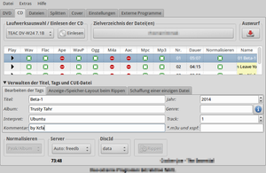

xcfa
Dieser Artikel wurde für die folgenden Ubuntu-Versionen getestet:
Ubuntu 16.04 Xenial Xerus
Ubuntu 14.04 Trusty Tahr
Zum Verständnis dieses Artikels sind folgende Seiten hilfreich:
 XCFA
XCFA  (X Convert File Audio) ist eine Anwendung, welche eine Vielzahl von Funktionen unter einer Oberfläche anbietet. Neben dem Auslesen der Tonspur von Audio-DVDs, dem Rippen von Audio-CDs und der Konvertierung von Audiodateien können auch CD-Cover erstellt werden. Der Funktionsumfang der Umwandlung hängt von den installierten Codecs bzw. Encodern ab. Da diese nicht Bestandteil des Programms sind und grundsätzlich als externe Kommandozeilenprogramme eingebunden werden, ist das Programm sehr flexibel. Bei fehlenden Encodern bietet das Programm Hilfestellung bei der Nachinstallation.
(X Convert File Audio) ist eine Anwendung, welche eine Vielzahl von Funktionen unter einer Oberfläche anbietet. Neben dem Auslesen der Tonspur von Audio-DVDs, dem Rippen von Audio-CDs und der Konvertierung von Audiodateien können auch CD-Cover erstellt werden. Der Funktionsumfang der Umwandlung hängt von den installierten Codecs bzw. Encodern ab. Da diese nicht Bestandteil des Programms sind und grundsätzlich als externe Kommandozeilenprogramme eingebunden werden, ist das Programm sehr flexibel. Bei fehlenden Encodern bietet das Programm Hilfestellung bei der Nachinstallation.
Installation¶
 Folgendes Paket muss installiert [1] werden:
xcfa (universe)
 mit apturl
mit apturl
Paketliste zum Kopieren:
sudo apt-get install xcfa
sudo aptitude install xcfa
Bedienung¶
Nach erfolgreicher Installation ist das Programm bei Ubuntu-Varianten mit einem Anwendungsmenü unter "Multimedia -> XCFA" zu finden. Alternativ verwendet man den Befehl xcfa [2].
Das Programm ist trotz des Funktionsumfangs übersichtlich gegliedert. Über die rechte Maustaste  kann ein Zusatzmenü aufgerufen werden.
kann ein Zusatzmenü aufgerufen werden.
| X Convert File Audio | |
| Reiter | Beschreibung |
| "DVD" | Auslesen der Audiospur von DVD |
| "CD" | CD auslesen und in gewählte(s) Format(e) konvertieren. Zusätzliche Einstellungen sowie das Bearbeiten der Tags sind möglich. |
| "Dateien" | Konvertierung von Audio-Dateien in eines oder mehrere andere Formate |
| "Splitten" | WAV-Dateien aufteilen und konvertieren |
| "Cover" | Erstellen von Covern - Titel und Trackliste können automatisch erstellt, Bilder via Drag'n'Drop importiert werden. Zum Drucken exportiert man das Ergebnis, wobei dieses als PostScript-, PDF- und PNG-Datei gespeichert wird. |
| "Einstellungen" | Einstellungen zur Priorität des Programms, der CDDB-Datenbank, den externen Encodern und den Metadaten (Tags) |
| "Externe Programme" | Zu verwendende Programme (Browser, Audio-Player und PDF-Betrachter) sowie zur Verwaltung externer Encoder. Diese können aus dem Programm heraus nachinstalliert werden (falls der Encoder in den Paketquellen enthalten ist, wird ein Hinweis zum erforderlichen Paketnamen angezeigt). |
CD auslesen¶
Nach dem Einlegen der Audio-CD die Datenbankabfrage mit  "Einlesen" starten. Die gewünschten Stücke und Formate
"Einlesen" starten. Die gewünschten Stücke und Formate  auswählen und mit "Rippen" den Vorgang starten. Unterstützt werden die Formate WAV, FLAC, APE, WavPack, OGG, M4A, AAC, MPC und MP3 (abhängig von den installierten Codecs).
auswählen und mit "Rippen" den Vorgang starten. Unterstützt werden die Formate WAV, FLAC, APE, WavPack, OGG, M4A, AAC, MPC und MP3 (abhängig von den installierten Codecs).
DVD auslesen¶
Nachdem das Medium eingelegt wurde, dieses "Einlesen". Die gewünschten Stücke (Tracks) auswählen und mit "Rippen" auslesen. Anschließend die Tracks konvertieren.
Tastenkürzel¶
| XCFA | |
| Taste(n) | Funktion |
| Strg + P | Einstellungen |
⇧ +  | horizontale Auswahl |
|
Strg + | vertikale Auswahl |
| Strg + A | alles auswählen |
| Entf | aktuelle Auswahl löschen |
| Strg + Q | Programm beenden |
Problemhebung¶
Externe Encoder¶
XCFA unterstützt auch ältere Codecs wie HE-AAC (AAC+ v1), Monkey's Audio, Musepack oder Shorten, die nicht in den offiziellen Paketquellen enthalten sind. Sollen diese Codecs verwendet werden, kann man auf Fremdpakete ausweichen, die heruntergeladen und manuell installiert werden müssen [3].

Hinweis!
Fremdpakete können das System gefährden.
Links¶
XCFA - X Convert File Audio
- linupedia.frxcfa - französisches Ubuntu-Wiki
CDs rippen
 Übersichtsartikel
Übersichtsartikel
- Erstellt mit Inyoka
-
 2004 – 2017 ubuntuusers.de • Einige Rechte vorbehalten
2004 – 2017 ubuntuusers.de • Einige Rechte vorbehalten
Lizenz • Kontakt • Datenschutz • Impressum • Serverstatus -
Serverhousing gespendet von